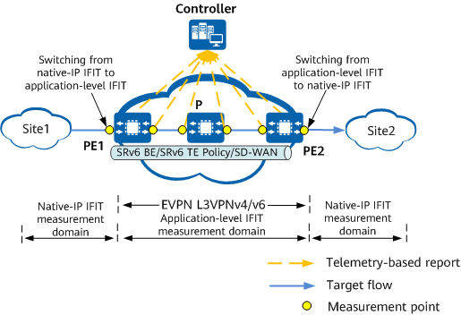

IFIT Application Scenarios
To collect statistics on performance indicators of service flows on a network, you can deploy IFIT application-level quality measurement. Specifically, you can configure IFIT measurement points in end-to-end or hop-by-hop measurement mode to monitor network performance. The following types of services and tunnels can be measured:
- Service type: EVPN L3VPN and public network services of both IPv4 and IPv6 types
- Tunnel type: SRv6 BE, SD-WAN tunnels, and SRv6 TE Policy
For example, on an EVPN L3VPN (similar to the public network), you can deploy IFIT as follows:
- Deploy an EVPN L3VPN, and import private network traffic to the ingress node.
- Configure an IFIT measurement point on the ingress node from which the measurement starts.
- Set other measurement points based on the measurement mode.
- End-to-end measurement: The IFIT measurement point is configured only on the egress node to collect performance statistics.
- Hop-by-hop measurement: IFIT measurement points are configured on each node that traffic traverses to collect performance statistics.
- Each measurement point reports the statistics to the controller so that users can view the statistics on the GUI.
Figure 1 shows the typical networking of IFIT end-to-end performance measurement on an EVPN L3VPN. IFIT measurement points are configured on the ingress and egress nodes of the EVPN L3VPN to monitor network performance in real time.
Figure 2 shows the typical networking of IFIT hop-by-hop performance measurement on an EVPN L3VPN. IFIT measurement points are configured on each node that traffic traverses on the EVPN L3VPN to monitor network performance in real time.
After IFIT is deployed, it measures the packet loss and delay of service packets in end-to-end or hop-by-hop mode on the EVPN L3VPN in real time. This allows users to promptly adjust services upon network performance deterioration.
In Figure 3, hop-by-hop performance measurement is used as an example. In a scenario where native-IP IFIT and application-level IFIT measurement domains are interconnected, the device can be configured as the ingress node for switching from native-IP IFIT measurement to application-level IFIT measurement or as the egress node for switching from application-level IFIT measurement to native-IP IFIT measurement to implement color bit switching for performance measurement. (Both the ingress and egress nodes are deployed in the application-level IFIT domain.)


Only dynamic IFIT flows are supported in the preceding scenario, while static IFIT flows are not supported.